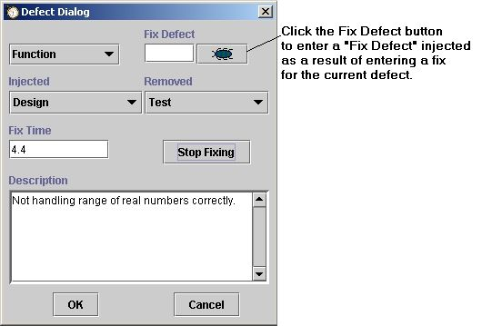

The testing phase is another phase that typically finds many defects. Since we have already seen an entry of a defect, we will take this opportunity to look at a more complicated situation.
Consider the following circumstance: you find a defect and put in a fix. Upon compiling your fix you discover that you have inadvertantly injected another defect (perhaps a syntax error in your coding). This is what the PSP calls a "fix defect" -- a defect injected while entering a fix for another defect.
The dashboard has a very handy feature to help in this regard. While the defect dialog for one defect is open, you can click on the little defect button in the corner to enter a new defect for the fix of the current defect.

After clicking the Fix Defect button, a new defect dialog will open for entry of data for this new defect.
While this new defect dialog is open, the timer for the previous defect dialog is paused. Also, notice that the number of the previous defect is already entered in the Fix Defect blank. Once the information for this new defect is entered and the user clicks OK, the previous defect dialog will pop to the front of the screen and the timer will resume. For more information about this behavior, see the Entering Defects help topic.
Back to our example. Once the program has been sufficiently tested and all the defects have been entered, hit the completion button again to move into Postmortem.
Next step: Postmortem
Jump to step:
START
1. Creating the project
2. Planning the project
3. Designing the program
4. Writing the code
5. Compiling the program
6. Testing the program
7. Postmortem